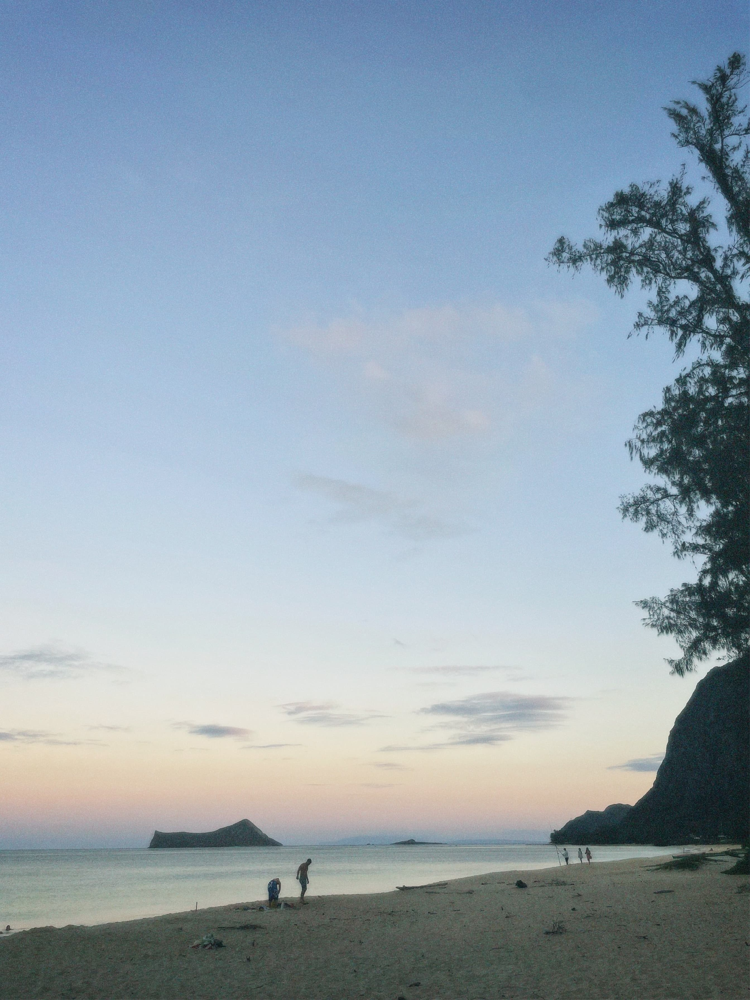

About This Site
Aloha and welcome to Saltwater Pursuits. This website was created to introduce beginners to ocean activities such as bodyboarding, diving, fishing, and other experiences connected to the water.
The kai is a big part of life here in Hawai‘i. It’s not just water around us it feeds us, shapes our culture, and connects people to the land and each other. Growing up here, you learn pretty quick that the ocean has its own kind of life and respect you gotta understand before you go in it. This site is here to help people explore the kai safely and actually learn what’s going on under the surface. There’s way more out there than most people think fish, reefs, currents, and whole ecosystems living together. It also shows how important it is to take care of the ocean, because it takes care of us too. For us in Hawai‘i, the kai isn’t just something we visit. It’s part of who we are, and there’s always more to learn from it.

Why I Created This Website
I created this website to help others learn about ocean activities while also encouraging appreciation for nature and the environment.
Many people around the world do not have the opportunity to experience beautiful beaches, sunsets, sunrises, or ocean activities. This project is a way to share that experience and inspire others to enjoy the ocean responsibly.
Site Goals
- Introduce beginners to ocean activities
- Promote ocean safety and awareness
- Share helpful tutorials and resources
- Encourage appreciation for nature and the ocean
Looking Ahead
Saltwater Pursuits will continue to grow with additional tutorials, safety information, equipment guides, and helpful ocean resources.